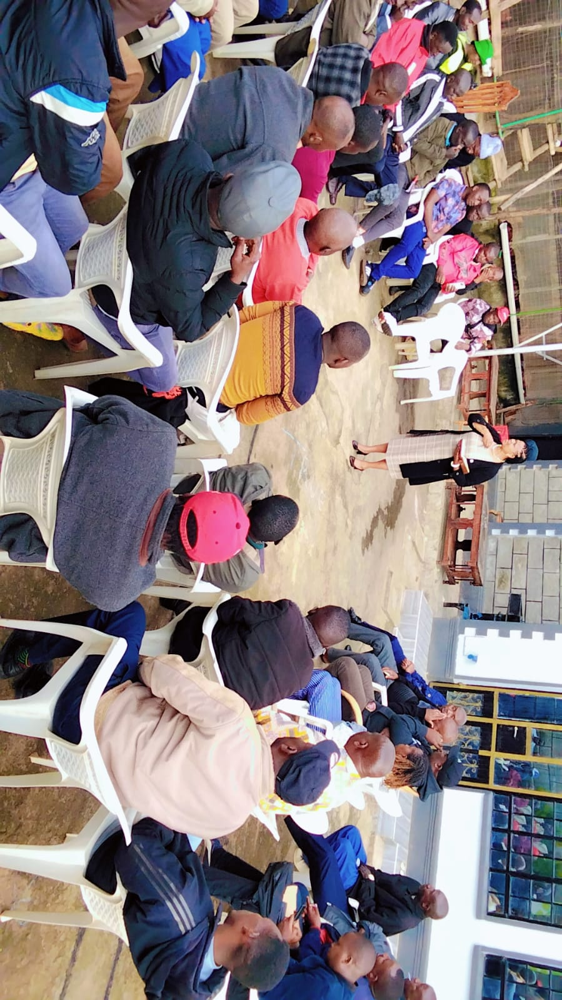
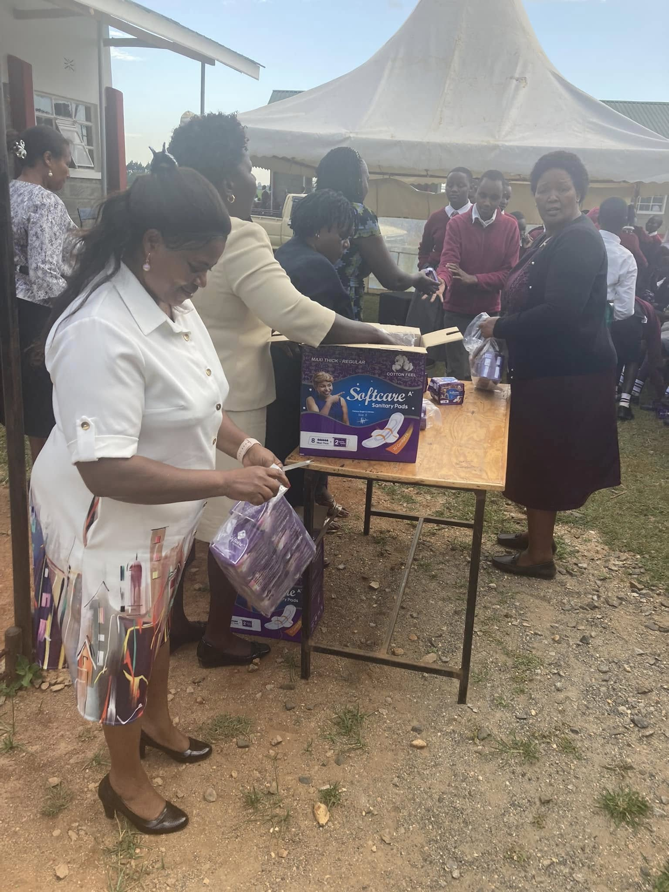

Design System
A living reference of colors, typography, and components for the Careful Balance Counseling site.
Colors & Tokens
Use these core tokens for UI components, backgrounds, and accessibility-conscious accents.
--focus-ring
--radius
Typography
Primary type: Inter. Use weight 600 for headings and 400 for body text for legibility.
H1 — Support that listens. Care that helps.
H2 — Services and support
Lead text / intro copy — a slightly larger body size for clarity and emphasis.
Body text — standard paragraph copy in 16px base size, aligned to left with 1.6 line-height for readability.
Components
Interactive elements, form controls, and content containers; see the full component library for markup examples and usage guidelines.
Imagery & Icons
Photography should be warm, inclusive, and non-clinical. Prefer candid portraits and soft natural light. Avoid graphic or distressing content.


Icons: use simple line icons with consistent stroke width; prefer SVG for crisp scaling.
Quick guidelines
-
Use
--accentfor primary CTAs and prominent interactive elements. -
Use soft surfaces (
--stone,--card) for cards and forms to create separation. - Keep body text at 16px with 1.6 line-height; avoid long lines on narrow screens by constraining content width.
- For imagery, favor warm, inclusive photos or soft illustrations; avoid clinical or distressing imagery.